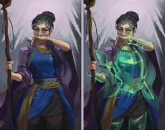
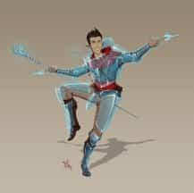

- 1 уровень, ограждение
- Время накладывания: 1 действие
- Дистанция: Касание
- Компоненты: В, С, М (кусочек выделанной кожи)
- Длительность: 8 часов
- Классы: волшебник, чародей
Вы касаетесь согласного существа, не носящего доспех, и на время действия заклинания его окутывает защитное магическое поле. Базовый КД существа становится равен 13 + его модификатор Ловкости. Заклинание оканчивается, если цель надевает доспех или вы оканчиваете его действием.
Доспехи мага — Заклинания
Доспехи мага [Mage armor]PH14 PH24
Галерея


Комментарии
Тут сказано, что "Базовый КД существа становится равен 13 + его модификатор Ловкости... "
Лезем в РНВ и находим, что Базовый КД определяется доспехами, цитата: "Надетый доспех (и щит) определяет базовый Класс Доспеха."
А как быть с дополнительными модификаторами КД, к-ые есть у монаха или варвара при навыке Защита без доспехов
или если базовый КД выше 13?
Если при создании волшебника выбрать предысторию мудрец, персонаж получит черту посвящённый в магию со старта, в не зависимости от расы персонажа. Так-как принцип действия этой черты в общем не поменялся, можно взять доспехи мага и творить его без траты ячейки.Лично мне, такой вариант более чем по душе
В чем суть? Накладываем на нашего босса до посинения внушение или очарование личности, что лучше. Когда оно срабатывает приказываем боссу стать согласным на эффект одного заклинания. Говорим команде не бить его один раунд и потом накладываем на него доспехи мага. Вуаля, у него резко падает кд до 13 с копейками и его пробьет любой бомж с ножом. P.S. работает только на существ, которые не носят броню и могут быть очарованы
Если да, то получается щуплый волшебник с 16 ловкости, 16 интеллекта и архетипом Песнь клинка уже на 2 уровне может заиметь в сложном бою КД19? 10 базовой + 3 от ловкости + 3 от интеллекта + 3 от магического доспеха?
Спасибо, теперь понятно. КД от песни клинка является бонусом, а значит прибавляется ко всему остальному.
Одним наложением, разумеется, нельзя. Наложив заклинание несколько раз, можно обложить доспехами несколько существ.
Как итог со своей стороны напишу (любитель поиграть волшебником, не дм) : нежелание подвергаться атакам подразумевается как чёрта волшебника, её следует отыгрывать и решать способами отличными от арбузинга мультиклассов и хоум брюшного накручивания кд заклинанию "доспехи мага"
"Ваша наблюдательность в бою позволяет вам предвидеть атаки и уклоняться от них. При расчёте своего КД вы можете использовать модификатор Интеллекта вместо Ловкости."
Я могу использовать доспехи мага, но , считать 13+интеллект вместо ловкости благодаря пассивке?
Будет ли дикий облик прерывать данное заклинание или же нет и можно будет тогда использовать КД = 13 + мод Ловкости животного?